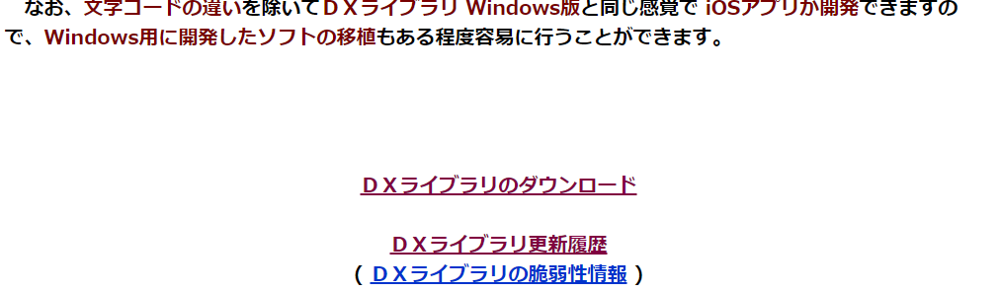
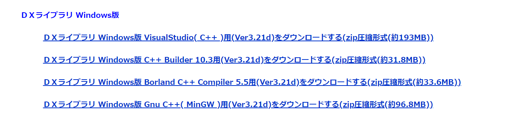
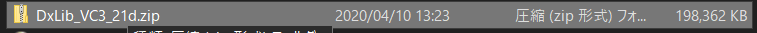
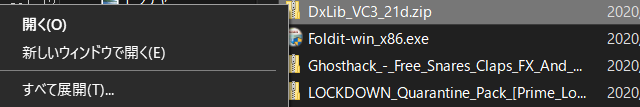

DxライブラリをVisual Studioで使えるようにするには手順にそって設定を行う必要があります。
このページでは手順を詳しく説明していきます。
Dxライブラリのダウンロード
Dxライブラリのダウンロードはこのページからできます。

Dxライブラリのトップページへ飛び下へ移動すると、「DXライブラリのダウンロード」という項目が出てきます。
今回はWindows版をダウンロードします。「ＤＸライブラリ Windows版 VisualStudio( C++ )用(Ver3.21d)をダウンロードする」をクリックしましょう。
するとZipファイルがダウンロードされるので、展開しましょう。
Zipファイルの展開は右クリック→すべて展開という項目を選びます。
プロジェクトの作成
Dxライブラリを使いVisual Studioでプログラミングしていくための準備をします。
導入はこちらのサイトの説明を見ながらやっていくとできます。
プログラムを組んでみる
Visual StudioのプロジェクトでDxライブラリを使えるようになったら、プログラムを書いて実際に動かしてみましょう。
#include "DxLib.h"
// プログラムは WinMain から始まります
int WINAPI WinMain( HINSTANCE hInstance, HINSTANCE hPrevInstance, LPSTR lpCmdLine, int nCmdShow )
{
if( DxLib_Init() == -1 ) // ＤＸライブラリ初期化処理
{
return -1 ; // エラーが起きたら直ちに終了
}
DrawPixel( 320 , 240 , GetColor( 255,255,255 ) ) ; // 点を打つ
WaitKey() ; // キー入力待ち
DxLib_End() ; // ＤＸライブラリ使用の終了処理
return 0 ; // ソフトの終了
}
このプログラムはこちらと同じものです。
このプログラムを実行(Ctrl + F5)すると、画面が黒くなり、画面の中心に白い点が見えると思います。(小さいので見えずらいかもしれません！)
何らかのキーを押すとプログラムが終了します。
基本的にDxライブラリのプログラムは
#include "DxLib.h"をし、Dxライブラリを使えるようにする。
プログラムはWinMainの波カッコの中に書いていく
ことになります。
ウィンドウモードに切り替える
ただ、このままだとフルスクリーンでプログラムが実行されてしまい、不便なのでウィンドウモードで実行できるようにしましょう。
ウィンドウモードに切り替えるには、DxLib_Init()関数を実行する前に
ChangeWindowMode(TRUE);を実行すれば大丈夫です。(TRUEはtrueでも問題ありません。)
#include "DxLib.h"
// プログラムは WinMain から始まります
int WINAPI WinMain( HINSTANCE hInstance, HINSTANCE hPrevInstance, LPSTR lpCmdLine, int nCmdShow )
{
ChangeWindowMode(TRUE); // ウィンドウモードに設定
if( DxLib_Init() == -1 ) // ＤＸライブラリ初期化処理
{
return -1 ; // エラーが起きたら直ちに終了
}
DrawPixel( 320 , 240 , GetColor( 255,255,255 ) ) ; // 点を打つ
WaitKey() ; // キー入力待ち
DxLib_End() ; // ＤＸライブラリ使用の終了処理
return 0 ; // ソフトの終了
}
これでウィンドウモードで実行されるようになりました！
次のページからゲームを作るための詳しいやり方を説明していきます！